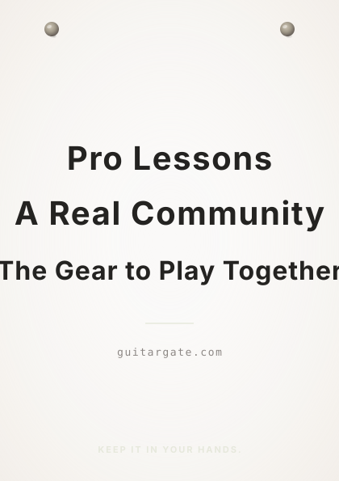
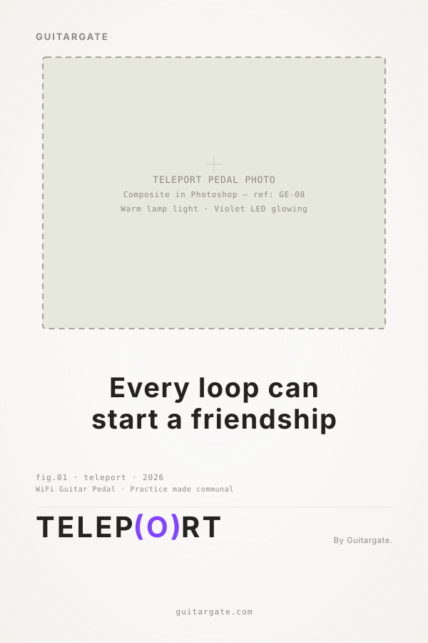
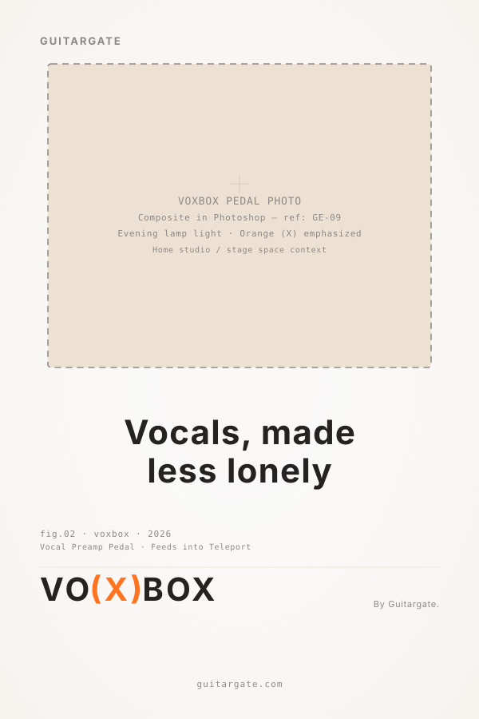
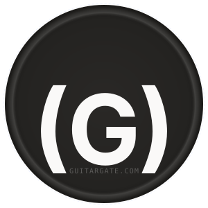
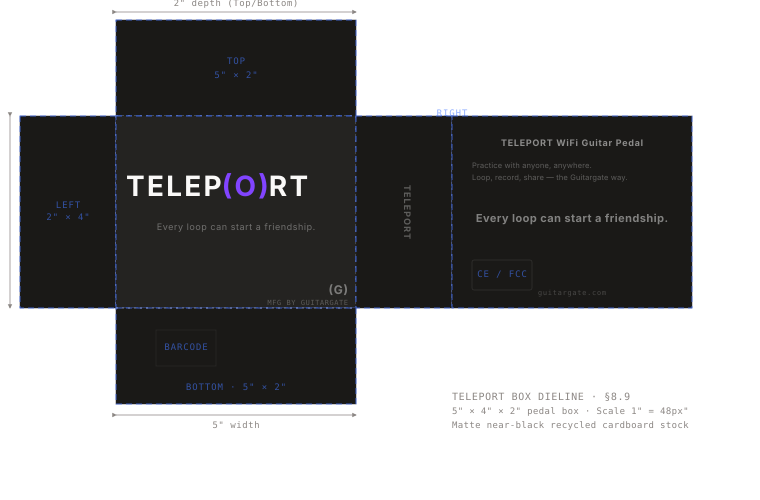
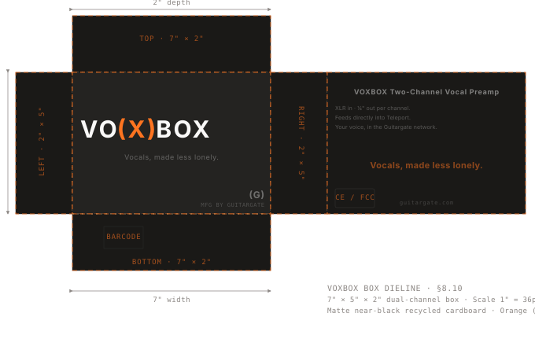

Welcome to the Guitargate Brand System. This document is your roadmap for implementing our visual and verbal identity — across the parent brand, the devices and gear we build (Teleport, Voxbox, and future tools), and everything that ties them together.
The framework on the following pages is the foundational cornerstone of the system. It will guide you on who we are, how our parent brand relates to our products, and how to apply any piece of the identity consistently.
Questions? support@guitargate.com
Our purpose is to make sure no guitarist has to do this alone. We bring players, teachers, and artists together — so the guitar in your hands today is still in your hands a year from now.
Alternate — shorter: Our purpose is to help guitarists keep music in their lives — together, every day.
Our vision is a world where "Playing With Others" is the default way people learn, practice, and create music.
Alternate: Our vision is that no guitarist — anywhere — has to practice alone.
Our mission is to build the world's most connected guitar learning system — a place (Guitargate) where pro-level lessons and a real community come together, powered by the tools we build (Teleport, Voxbox, and everything that comes next) to turn solo practice into something you do with other people. We teach the "why" behind the notes, not just the what, and we make the gear that carries those ideas between people.
A core part of what we do is free. Teleport 101 and a growing library of beginner courses are available to anyone, at no cost, forever — because the first year of learning guitar is the year most people quit, and nobody should quit because they couldn't afford a teacher. The community itself is also a gift: every member who posts a REACTS video, shares a loop, or answers a question in a thread is part of the thing we're building.
Guitargate is an umbrella brand that contains a growing family of devices and gear. Understanding which brand is which — and when to use each — is the foundation of the whole system.
The BOSS model. For designers new to the system: think BOSS pedals. Every BOSS pedal has its own name (DD-3, DS-1, RV-6), its own pedal color, and its own personality — but every single one carries the BOSS wordmark on top, uses the same typography, and is clearly part of one family. That's how Guitargate, Teleport, and Voxbox relate.
I built Guitargate so I would never give up on music — or on myself. If you have a community of people behind you, you don't quit. The same is true for every member here.
Music school works the same way. You surround yourself with motivation, inspiration, and education, and you know you're not alone — and the likelihood you keep going goes up. You keep getting better. You don't quit and become an accountant.
That little voice in the back of your head — the one that says you're a musician — deserves a microphone. The way you give it one is by surrounding yourself with other people whose little voice is saying the same thing. Then it's loud. Then you listen. Then you act.
That's Guitargate. The name comes from Stargate, not Watergate — it's a portal, not a scandal. The building of a future, together, through music.
For guitarists who love music but keep finding life in the way — Guitargate is the membership that puts other guitarists in your corner. Pro lessons, a real community, and the gear that brings them home to you. So you'll play more. And you won't quit.
| Value | Description |
|---|---|
| Community First | Everything we build exists to serve the community. The parent brand is the meeting place. The tools are what members use once they get there. We make decisions with the community in mind first — not the product, not the business. |
| Teacherly | We explain the why, not just the what. Every lesson, every piece of copy, every product decision should help the player understand music more deeply. We never talk down, never oversimplify, and never sacrifice depth for approachability. |
| Honest | We say what we mean. If something is hard, we say it's hard. If something takes time, we say it takes time. We are encouraging without being coddling. |
| Craft | Everything we put in your hands — lessons, gear, community moments — gets the same care we'd give a guitar we built ourselves. Because if it's worth giving you, it's worth doing right. |
| Access | A core part of what we do is free. Teleport 101 and a growing library of beginner courses are available to anyone at no cost — because nobody should quit because they couldn't afford a teacher. |
Derived from our mission, vision, and purpose, our tone of voice emerges. These five defining characteristics encapsulate our personality, shaping the way we communicate and interact with our community — across the parent brand, every device we build, and every touchpoint in between.
| Characteristic | Qualifier |
|---|---|
| Encouraging | But Never Coddling |
| Knowledgeable | But Never Academic |
| Honest | But Never Harsh |
| Playful | But Never Gimmicky |
| Human | But Never Unprofessional |
Our voice pillars serve as the guiding force of our verbal identity. They shape the tone and style of our communication, dictate the vocabulary we use, and ensure consistency across the parent brand and every device we ship.
Teacherly — We explain the why, not just the what. We know music theory, and we make it make sense.
Communal — We don't say "you" when we can say "we." Progress is a group activity.
Warm — We show up like a friend, not a platform. We take the work seriously and ourselves lightly.
Our trueline stands as our fundamental brand promise — the core touchpoint for all brand communication, offering direction for new brand language and informing our voice.
| Do | Example |
|---|---|
| Write in first person plural — "we", not "Guitargate" | "We built Teleport so you never have to practice alone." |
| Lead with insight, not feature lists | "Teleport is how practice becomes community." |
| Use contractions | "You don't have to figure this out alone." |
| Write short sentences when the point is simple | "Practice is better with bandmates." |
| Name the why before the what | "The reason this chord progression works is the tension of the IV before the I resolves it." |
| Call players "players" or "members", never "users" or "students" | "Our members are 200,000 strong." |
| Acknowledge the difficulty before promising the upside | "Practicing alone is hard. That's the whole problem. So we built a place where you don't have to." |
| Don't | Example |
|---|---|
| Don't use AI tell-words | "Our stunning new pedal revolutionizes the way you play." |
| Don't write about Guitargate from the outside | "Guitargate is an online guitar education platform." |
| Don't use passive voice | "Lessons are taught by world-class musicians." |
| Don't use industry jargon | "Onboard via our learner activation funnel." |
| Don't over-promise transformation | "Become a virtuoso in 30 days." — Promise belonging instead: "You'll have people in your corner." |
| Use This | Avoid This |
|---|---|
| players · members · bandmates · the community · the room · in your corner · show up · stay · plug in · tune up · jam · session · lesson · pro · membership · loop · take · REACTS · Teleport · Voxbox | users · students of the platform · learners · customers · subscribers · audience · content · courseware · end users · class (use lesson) · stunning · revolutionary · game-changing · industry-leading |
The GUITARGATE wordmark, set in Transducer JTD Bold Extended, with optical adjustments to letter heights as documented in the construction file. The primary logo is the most direct representation of the brand.
SVG asset: assets/logos/guitargate-wordmark.svg · Reference diagram: assets/diagrams/logo-construction.svg
The (G) symbol is a self-contained mark used at small sizes, in social avatars, on packaging where the wordmark would not be legible, and as a tiled-pattern source element. Construction: 144×144px at reference scale (6S, where S = 24px). 1.5× the cap height of the wordmark.
SVG asset: assets/logos/g-symbol.svg
Each device wordmark follows the Device Naming Rule (see §3.8). One letter from the device name is customized with the device's accent color and a glyph describing what the device does.
SVG assets: assets/logos/teleport-wordmark.svg · assets/logos/voxbox-wordmark.svg
GUITARGATE stacks on top, device wordmark below. Parent mark sized at approximately 50–60% the cap height of the device name.
- Black on Cream (or white)
- Cream (or white) on Black
- Parent mark in Guitargate Blue on Cream
- Device wordmark accent letter in sub-brand color
- Cream (or white) on device sub-brand color
Clear space of 1S on all sides of any mark, where S is the deployed square unit at the canvas's logo size (not the source-file 24px).
Construction reference: assets/diagrams/logo-construction.svg
- Squash, stretch, or distort any mark
- Apply effects — drop shadow, bevel, glow, outline stroke
- Recolor outside the approved system palette
- Rotate any mark
- Change the typeface
- Use weak contrast
- Resize individual elements within a lockup
- Place on complex or busy backgrounds
- Pair a device wordmark with a different device's accent color
- Use a device wordmark without the parent mark in co-branded contexts
One letter, one icon, one color.
The naming rule exists so every device in the Guitargate system reads as part of one family at a glance — members shouldn't have to read the wordmark to know which world they're in.
The Guitargate color system is built around one shared foundation and a growing library of sub-brand accent palettes. Every brand in the system — parent and device — shares the same near-black and cream foundation. Each brand adds a single accent color, expressed as a ramp: dark tint, pure accent, light tint.
| Brand | Accent Ramp | Purpose |
|---|---|---|
| Guitargate | #4476FF Blue | Parent brand accent |
| Teleport | #8144FF Violet | WiFi guitar pedal sub-brand |
| Voxbox | #FF7420 Orange | Vocal preamp pedal sub-brand |
Every frame, image, post, and poster must conform to this ratio.
| Zone | Rule |
|---|---|
| 60% — Dominant neutral | Warm near-black, cream, pale sand, or geological mid-tone. Never a brand color. |
| 30% — Secondary tone | The dark zone — rock mass, shadow, void. |
| 10% — Accent | One named brand color per frame. White is neutral, not an accent. |
Device packaging exception: Sub-brand color is the 60%, near-black is the 30%, cream/white type is the 10%.
Warm and electric — like the front of a pedalboard before the first song of a set.
#1A3CBD for small text on light backgrounds (8.66:1 ✅). On a blue button: use #010719 dark text, NOT white.
SVG swatch reference: assets/color-swatches/guitargate-palette.svg
Violet — for the sound that travels. The pedal whose purpose is sending music between musicians who aren't in the same room.
SVG swatch reference: assets/color-swatches/teleport-palette.svg
Orange — for the voice that joins the band. Voxbox brings vocals into the Teleport ecosystem.
#190B03, NEVER white.
#4FCB80 is approximate. Replace with exact value from source hardware design file once locked. Confirm WCAG ratio on Voxbox dark BG #190B03 once finalized.
SVG swatch reference: assets/color-swatches/voxbox-palette.svg
Never use Neutral 500 for small text on light backgrounds (3.55:1 ⚠️). Use Neutral 600 instead (4.58:1 ✅).
Hue-matched dark backgrounds — not neutral black — give the immersive, brand-saturated feel.
| Brand | Dark BG | Contrast | Button Text |
|---|---|---|---|
| Guitargate | #010719 navy |
5.05:1 ✅ | #010719 dark, NOT white |
| Teleport | #160620 deep purple |
3.89:1 ⚠️ large/display only | White only |
| Voxbox | #190B03 warm brown |
7.13:1 ✅ | #190B03 dark, NEVER white |
Designed by James Todd. "The warmth of analog tech in a digital format." Used for the wordmark, large display, and hero headlines. The Bold Extended cut is the default.
Loaded via Adobe Fonts kit nem7lpy. If unavailable, falls back to Inter. For print production, outline all text in Adobe Illustrator before sending to vendor.
Designed by Connary Fagen. Used for sub-headlines, body copy, and UI. Articulat CF Regular at 120% leading is the default for body. Articulat CF Italic at 105% type size for emphasis.
Used for annotation layers in the visual graphics system — coordinate text, label callouts, technical specifications. Web fallback: Roboto Mono.
Built from repeating instances of the (G) mark. Base pattern for all parent-brand applications — packaging fill, social backgrounds, merchandise lining.
Pattern tile shown at reduced opacity for illustration. Production files use consistent opacity and spacing as specified in the tile source file.
Uses individual letterforms from all wordmarks — including the custom glyphs (O) from Teleport and (X) from Voxbox — to create expressive repeating compositions.
| # | Name | Content |
|---|---|---|
| 1 | Community | Member-led culture, REACTS clips, jam sessions, in-the-wild member moments |
| 2 | Lessons | Michael-led content; pro lessons, masterclasses, song breakdowns, theory deep-dives |
| 3 | Members | Featured member journeys, milestones, "year one" stories, profiles |
| 4 | Teleport | Pedal-specific content; setup, jam tracks, behind-the-scenes |
| 5 | Voxbox | Pedal-specific content; vocalist-focused |
| # | Copy |
|---|---|
| 1 | One Membership, Everything Included |
| 2 | Real Human Feedback |
| 3 | 30-Day Money-Back |
| 4 | Taught by Pros |
| 5 | You'll Play More |
Guitargate's photography sits in two registers. The dominant register is Warm & Lived-In — the everyday rooms where music actually happens. The secondary register is Intimate Texture — close-up abstract compositions used for poster moments, campaign hero pieces, and album-art-style packaging accents.
The two registers share a foundation: warm and natural tones (creams, woods, browns, muted grays), real materials, real light, real wear.
| Register | Share | Use |
|---|---|---|
| Warm & Lived-In | ~80% | Members, lessons, gear-in-context, community moments, editorial |
| Intimate Texture | ~20% | Poster moments, campaign heroes, packaging accent art |
Real practice spaces. Hands on instruments. Members in their actual rooms. Members on stage at open mics. Teleport on a worn rug next to a half-finished cup of coffee. Voxbox on a stand in a real venue. Wood grain, amp tolex, scuffed pedalboards, taped setlists, fingertip calluses.
| Rule | Guideline |
|---|---|
| Subject | Player, instrument, and device as primary focal points. Never product-on-seamless. Real members and teachers, never stock photography. Spaces should look used, not staged. |
| Light | Natural light where possible — window, lamp, evening. Soft depth of field. Warm color temperature. Cool clinical light is a Misuse. |
| Mood | Lived-in, warm, vulnerable, present. The photograph should feel like you walked into someone's practice room mid-session. |
Close-up textures from the world Guitargate's members already live in. Used for poster moments, campaign hero pieces, and packaging accents where a more graphic, designed image is needed.
Subject sources: wood grain (guitar bodies, practice room floors, vintage amp cabinets) · amp tolex, grille cloth, weave patterns · fingertip calluses, knuckle wrinkles, hand wear · pickguard scuffs, fretboard wear, headstock chips · setlist tape, gaff tape, sharpie marks on a strap · cable braid, knob detail, pedalboard texture.
| Image Type | Max Crosshairs | Max Dot Points | Max Text Blocks | Max Bounding Boxes |
|---|---|---|---|---|
| Diagonal split | 3 | 3 | 1 | 1 |
| Full striation | 2 | 0 | 1 | 0 |
| Concentric ring | 1 | 4 | 1 | 1 |
| Color field | 1 | 0 | 1 | 0 |
Warm side / dark side rule: Type and coordinate text on the warm/pale side. Brand mark on the dark side. Never cross the boundary between the two zones.
Neutral and natural tones — creams, warm woods, browns, muted grays. Device accent colors (Teleport Violet, Voxbox Orange) act as accents against neutral backgrounds. Subject centered, soft depth of field.
Subject centered in frame, soft depth of field. For device-focused photography, frame the pedal so the wordmark (and accent color) is clearly legible. Include a wider view of the surrounding environment and close-up shots of the hardware. The room around the subject is part of the photograph — never cropped out for a "cleaner" shot.
| Series | IDs | Content |
|---|---|---|
| PE — People | PE-01 to PE-10 | Players, hands, portraits — warm light, real rooms |
| GE — Gear | GE-01 to GE-11 | Hardware in situ — Teleport, Voxbox, pedalboards, guitars |
| SP — Spaces | SP-01 to SP-08 | Practice rooms, venues, home studios |
| CO — Community | CO-01 to CO-07 | Members together — open mics, sessions, jam videos |
| ML — Lifestyle/Merch | ML-01 to ML-13 | Hat, tee, pick tin, sticker pack in-context shots |
| TX — Textures | TX-F to TX-N | Intimate textures — wood grain, tolex, calluses, cable braid |
| QT — Quote Cards | QT-01 to QT-12 | Voice-in-use quote cards for social |
| Surface | Copy |
|---|---|
| Brand Mantra | Keep it in your hands. |
| System Descriptor | Pro Lessons. A Real Community. The Gear to Play Together. |
| Membership Promise | You'll play more. |
| Teleport Tagline | Every loop can start a friendship. |
| Voxbox Tagline | Vocals, made less lonely. |
| Sticker Copy | Thanks for picking it up. |
| Instagram Bio | Pro lessons. A real community. Gear that brings you together. Membership starts free. Keep it in your hands. |
| Email Sign-off | Keep it in your hands. — Michael & the Guitargate team |
| Packaging Footer | guitargate.com |
The trueline divider is a full-bleed, near-black, landscape panel. "Keep it in your hands." in Transducer Extended Bold at maximum scale — period rendered in Guitargate Blue. GUITARGATE wordmark below at 2× logo-S. Used as a chapter-opener or standalone poster moment.
The typographic poster from §8.1A composited onto a brick wall in a real venue or practice space. Demonstrates the brand in environmental context — wheat-paste poster style, slight perspective distortion.
A5 portrait flyer on cream paper stock. "Pro Lessons. / A Real Community. / The Gear to Play Together." in Transducer, periods in Guitargate Blue. "KEEP IT IN YOUR HANDS." at bottom. Thumbtack mounting marks at top corners. Designed for a corkboard in a music store, rehearsal space, or guitar shop.

Full-viewport hero section on Guitargate Blue 950 dark background. "You'll play more." at maximum display scale. Supporting copy, CTA, and trust strip. Demonstrates the membership brand moment at desktop breakpoint.
Portrait-format device poster on cream paper with radial gradient atmosphere. Large photo slot for Teleport pedal composite (ref: GE-08). Tagline "Every loop can start a friendship." with period in Teleport Violet. TELEP(O)RT wordmark below with "By Guitargate." attribution.

Parallel treatment to §8.4. Portrait-format device poster on warm cream. Photo slot for Voxbox pedal composite (ref: GE-09). "Vocals, made less lonely." with period in Voxbox Orange. VO(X)BOX wordmark + "By Guitargate." attribution.

Two hero stickers from Drop 01. Circular (G) symbol die-cut — dark background, cream mark, "GUITARGATE.COM" at bottom. Rectangular trueline die-cut — "Keep it in your hands." with period in Guitargate Blue.

G sticker · ~3" circular · StickerMule die-cut round
Trueline sticker · ~4.5" × 1.5" · StickerMule die-cut rectangle
Profile avatar: (G) symbol on near-black circle (cropped from g-sticker.svg). Bio copy: "Pro lessons. A real community. Gear that brings you together. Membership starts free. Keep it in your hands." Five highlight covers match §6.4 order: Community, Lessons, Members, Teleport, Voxbox.
HTML signature using inline styles for maximum email client compatibility. "Keep it in your hands." in Georgia italic (Transducer approximation — web fonts are stripped by most clients). Attribution line. (G) mark in Georgia serif + guitargate.com link.
Cross-pattern dieline for the Teleport WiFi guitar pedal retail box. Front face: TELEP(O)RT wordmark, tagline, (G) + MFG mark. Back face: product descriptor, tagline, regulatory placeholder. Dieline strokes in Guitargate Blue dashed; score lines in Blue 100.

Parallel treatment to §8.9. Larger box (dual-channel) with Voxbox Orange accent. Front: VO(X)BOX wordmark, "Vocals, made less lonely." Back: two-channel vocal preamp descriptor, "Feeds directly into Teleport." Dieline strokes in Voxbox Orange dashed. Channel Two green does not appear on packaging.

Overhead flat lay of all five Drop 01 merch items: SKU01 Hat · SKU02 Tee Mantra · SKU03 Tee Wordmark · SKU04 Pick Tin · SKU05 Sticker Pack. Arranged on warm neutral surface. Shows the brand family as a physical system.
in your
hands.
Thanks for taking the time to review the Guitargate Brand System. If you have any further questions, hit us up below.
Open items: §4.5 Channel Two green HEX · §3.4 lockup cap-height ratio · §3.6 minimum sizes · §5.4 custom display typeface
Source: guitargate_brand_system.md